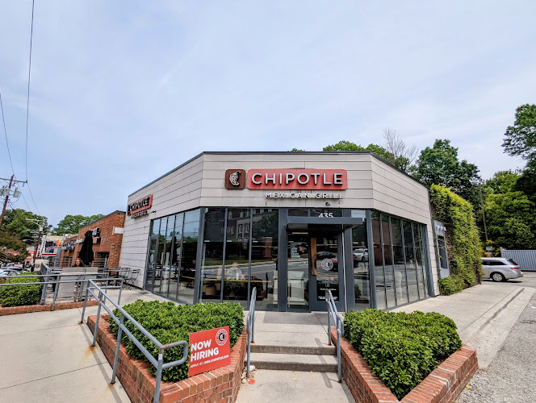
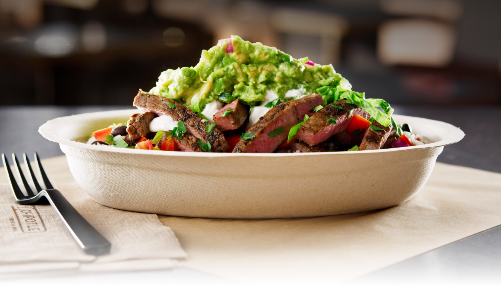
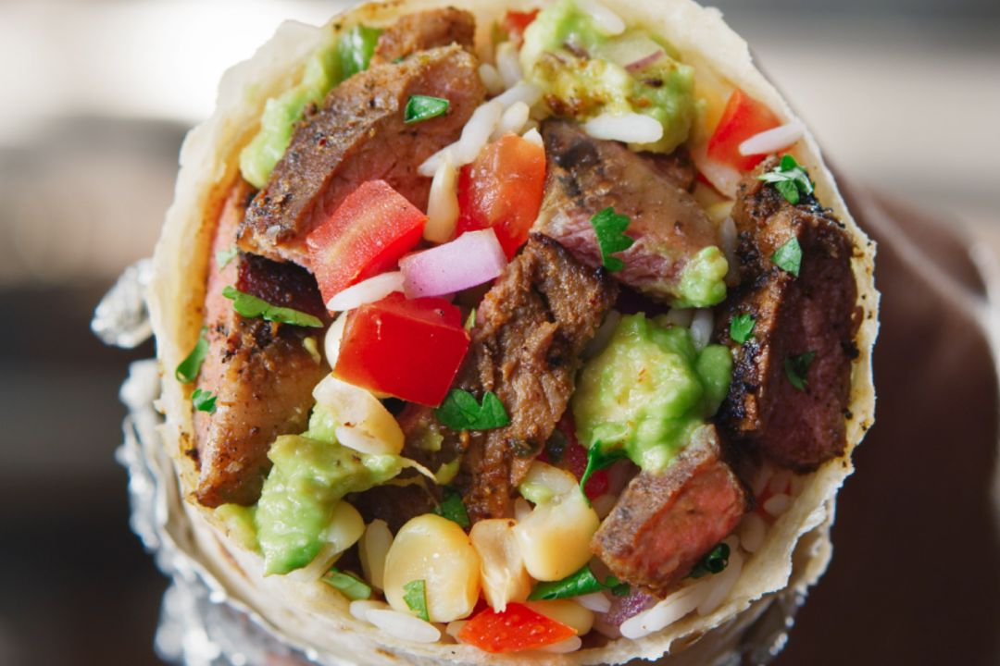
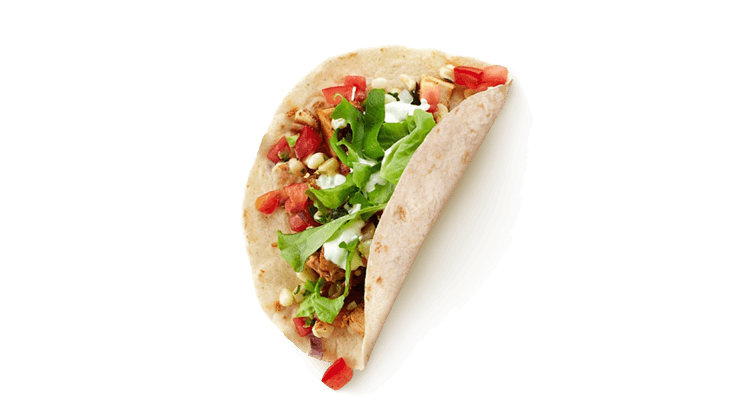
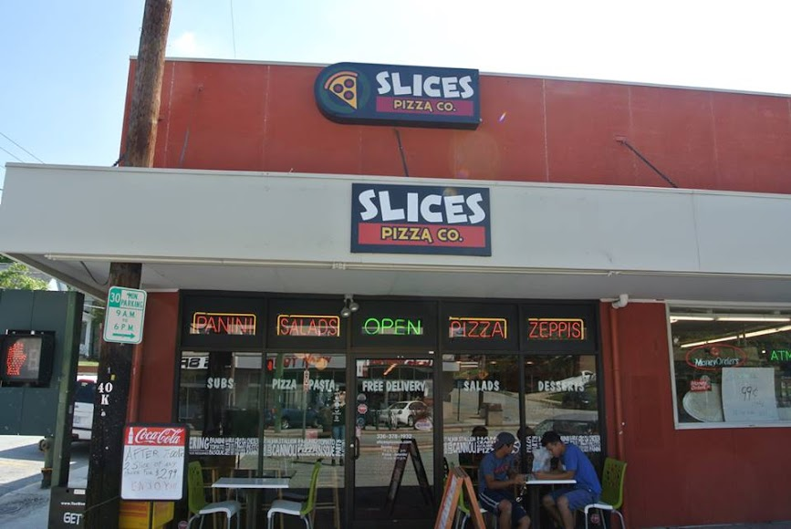
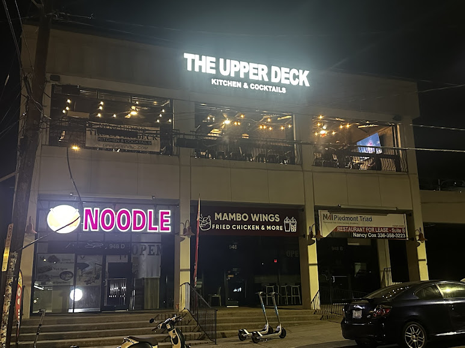
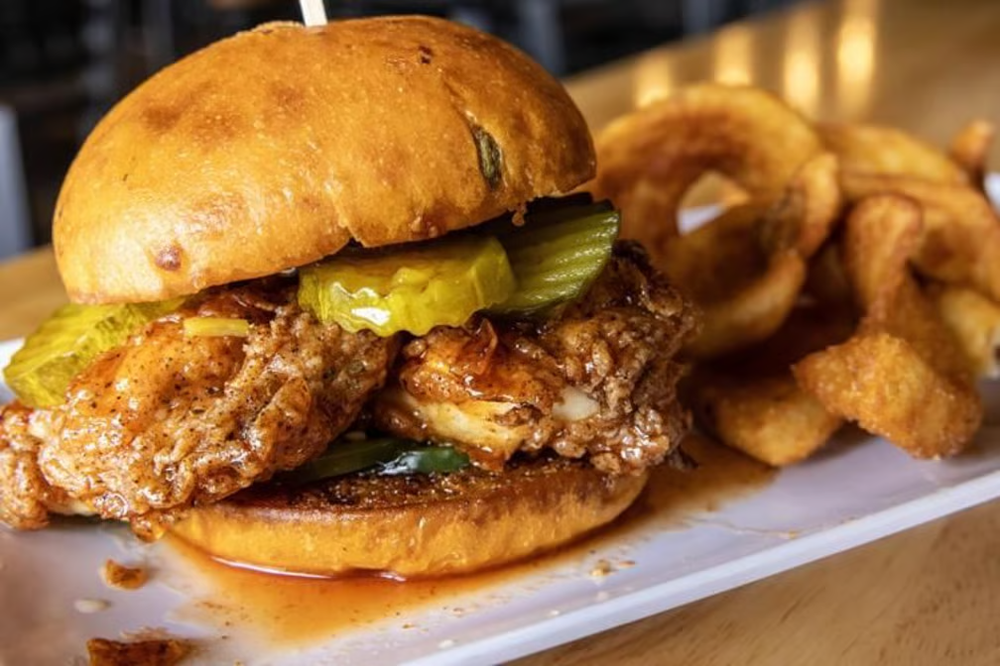
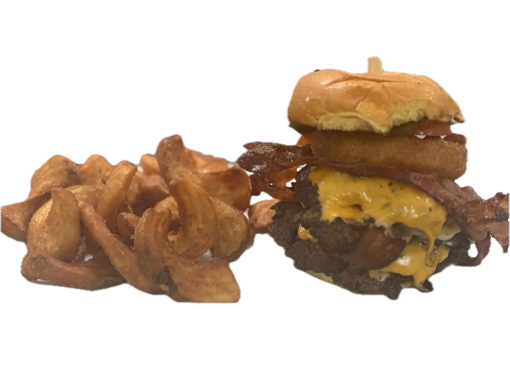
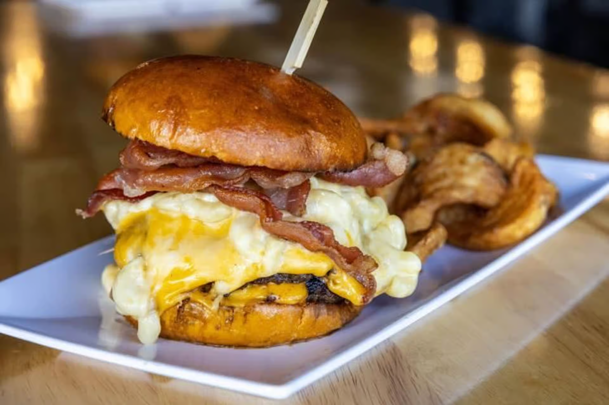

Hello, food enthusiasts! I'm here today to investigate and promote restaurants in the heart of
Greensboro. This time, I will be examining many places near the University of North Carolina at
Greensboro as well
as North Carolina Agricultural and Technical State University. I know that college students will be
looking
for places that are quick, cheap, walkable, and, of course, delicious. In my investigation, I have
found several
such locations and the ones I recommend the most I will be highlighting below. Let's get right into
it!
Chipotle

Greensboro Chipotle
Chipotle Mexican Grill is a chain restaurant that guarantees consistency and quality.
With a build-your-own menu, Chipotle offers a large amount of flexibility in their meals,
making it a great place for those with a variety of diets. Located at 435 Tate St,
this branch is open every day from 10:45a.m. to 11:00p.m., making it a great place for late diners.
Recommended Dishes
Carne Asada Bowl

The carne asada bowl is a wonderful build-your-own dish that can be modified
with
many toppings. Source: chipotle.com
Carne Asada Burrito

The carne asada burrito is another wonderful dish. Unlike the bowl,
the burrito comes in a wonderful flour tortilla. Source: chipotle.com
Chicken Tacos

The chicken tacos are also build-your-own, and they offer a choice of
soft or hard shell. Source: chipotle.com
Slices Pizza Co.

Slices Pizza Co. By Tony
Slices Pizza Co. By Tony is a great and cheap pizzeria right off the UNCG campus. Known for their
authentic NY style pizza, they offer a wide variety of foods on their menu. Located at 401 Tate St,
Slices is a perfect location for current UNCG students. Although they aren't open on Sundays, they
are open for a large window of time, 10:30am-11:00pm every other day, with the exception of opening
at 11:00a.m. on Saturday.
Recommended Dishes
BBQ Chicken Pizza
All pizza slices are NY style and come with lots of toppings. An excellent
pizza they offer is the BBQ chicken pizza. Source: slicesbytony.com
Salad with Chicken
For those looking for a healthier option, Slices also serves excellent salads.
Source: slicesbytony.com
Spaghetti with Meatballs
If you are hoping for options without pizza, the pizzeria also offers dishes
like spaghetti with meatballs. Source: slicesbytony.com
The Upper Deck Kitchen & Cocktails

Slices Pizza Co. By Tony
The Upper Deck is a wonderful place to dine. The atmosphere is lively, and they
often host many events throughout the week. This eatery offers highly rated burgers and
other American dishes. This restaurant certainly caters to their college student crowd, as
they have much later hours than other nearby restaurants. They are open 11:00am-12:00am Monday
through Wednesday, 11:00am-1:00am Thursday through Saturday, and 11:00am-11:30pm on Sunday. They
are located at 948 Walker Avenue.
Recommended Dishes
Honey Heatwave Chicken Sandwich

If you love some spice on your sandwich, the Honey Heatwave is for you.
This sandwich unites sweet and spicy with jalapenos, sweet pickles, and a honey drizzle. Source: doordash.com
Spartan Double Smash Burger

If you're a burger lover, consider the Spartan Double Smash burger.
With 4 burger patties, you'll likely have leftovers from this meal. Source: doordash.com
Mac Attack Smash Burger

The Mac Attack burger is the burger for macaroni and cheese enthusiasts.
This burger comes topped with macaroni, cheese, and bacon. Source: doordash